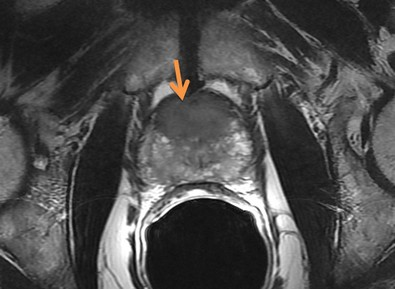
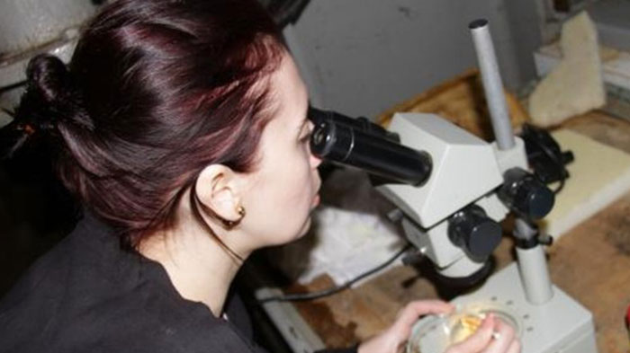

DE LA URINAREA FRECVENTĂ LA CANCERUL DE PROSTATĂ ESTE UN PAS! CUM SĂ RECUNOȘTI O
AMENINȚARE ÎN TIMP? INTERVIU CU UN EXPERT REMARCAT IN DOMENIUL UROLOGIEI.
Elena Popescu Expert în domeniul urologiei și andrologiei, om de știință și cercetător, șef al Fundației Independente „Sănătatea bărbaților”
Experiență de muncă - mai mult de 10 ani
CARE SUNT PRIMELE SEMNE DE PROSTATITĂ:
Nevoia frecventă de a urina
Scăderea potenței (disfuncție erectilă)
Probleme cu urinarea
Disconfort sau durere în zona inghinală și în
partea inferioară a spatelui
În stadiul inițial, boala poate să nu se manifeste în niciun fel, dar o scădere a
nivelului de potență și probleme cu urinarea sunt primul semn al unei boli
emergente. Principalul lucru este să nu întârzii! Impotenta este cel mai inofensiv
rezultat al acestei boli. Mult mai periculoasă este formarea unei tumori - adenom de
prostată, care cel mai adesea duce la cancer de prostată.
Prin urmare, prostatita prezintă mai multe riscuri pentru bărbați, dintre care
principalele sunt:
IMPOTENŢĂ - ADENOM DE PROSTATĂ - CANCER DE PROSTATĂ

Tumora de prostată îndepărtată (diametru 65 mm)
Apropo, impotenta apare in 100% din cazuri, adică la fiecare bărbat care suferă de
prostatită. La unii mai devreme, la alții mai târziu, dar întotdeauna.
Cancerul de prostată apare în stadiile ulterioare ale prostatitei, dar nu este, de
asemenea, neobișnuit. Acești bărbați, care nu luptă cu prostatita și trăiesc cu ea,
de fapt „se joacă cu focul”. Dacă doriți să trăiți mult și să aveți erecții bune,
prostatita trebuie eliminată. Și acest lucru trebuie făcut cât mai repede posibil.
Problema este că majoritatea bărbaților bolnavi pur și simplu nu caută ajutor.
Cineva nu consideră că este periculos, cineva consideră că este rușinos. Ca
urmare, obținem o situație în care pacienții pur și simplu ignoră boala. Și dacă
caută ajutor, atunci cel mai adesea în acele momente când este prea târziu și începe
să se dezvolte o tumoare canceroasă.

Operația pentru eliminarea tumorii canceroase de prostată
Trebuie să înțelegeți că prostatita este o boală mortală, unul dintre principalele
pericole a cărei este transformarea într-o tumoare canceroasă a glandei prostatei.
Ceea ce, la rândul său, duce adesea la moartea persoanei. Rămasă fără control,
boala se dezvoltă uneori rapid, după 1-2 ani, ducând la cancer.
Dar acum bărbații au o oportunitate unică de a scăpa de simptomele acestei boli o dată pentru
totdeauna la domiciliu.
Faprul este că în 2021 a apărut un produs revoluționar care ajută la restabilirea rapidă a funcției glandei prostatei, la eliminarea inflamației, contribuie la eliminarea completă a simptomelor prostatitei, chiar dacă este într-o formă cronică și, de asemenea, ajută în mod semnificativ la crește potența și durata actului sexual.
Numele acestui produs este . Acesta este un produs
local foarte accesibil, deși la dezvoltarea sa au participat și oameni de știință
din Germania și Franța.
În 2022, Fundația independentă „Sănătatea bărbaților”, care este
cel mai important centru științific în domeniul urologiei, a finalizat cu succes
testele produsului de nouă generație , conceput pentru
combaterea prostatitei. Acest lucru a fost raportat de serviciul de presă al
Fundației.
1.Eficacitatea , calculată conform metodei standard (numărul celor care au fost ajutați de în raport cu numărul total de persoane din lotul de 100 participanți), este de 98%
2. Absența simptomelor bolii după
întreruperea administrării produsului (rezultatele observației timp de șase
luni) a fost de 99%.
3. După o săptămână de utilizare a produsului,
toți pacienții au o creștere semnificativă a libidoului și a potenței.
4. Produsul a contribuit la creșterea duratei actului sexual la 95%
dintre subiecți.
5. Efectele secundare, inclusiv reacțiile alergice,
nu au fost identificate.
6. Produsul revoluționar este recunoscut
ca un remediu principal în lupta împotriva prostatitei.
Comentariile experților:
Florin Stoica Șef al unei clinici private, expert în urologie și nefrologie, membru al Congresului Mondial al Specialiștilor în Sănătatea Reproducerii.
Experiență de muncă - mai mult de 45 de ani
Până în 2022, nu au existat remedii eficiente și, cel mai important, accesibile
pentru prostatită în țară. Și acest lucru a dus la consecințe incredibile —
incidența a fost de 45% în rândul populației în vârstă și, cel mai rău, de 30% în
rândul tinerilor. este o revoluție în domeniul luptei cu prostatita, un adevărat
panaceu. Eficacitatea produsului a fost dovedită în practică în România. Compoziția
unică și descoperirea celulelor vii de către oamenii de știință au făcut
indispensabil pentru prostatită.
Produsul a trecut studiile. Rezultatele au fost un adevărat șoc pentru
specialiști. Aproximativ 98% din toți participanți au scapat de toate simptomele prostatitei. La toți
ceilalți au dispărut parțial simptomele și s-au oprit procesele inflamatorii în
prostată. Cu toate acestea, restul de 2% dintre pacienți pot prezenta unele recăderi
care dispar odată cu utilizarea continuă a .
De asemenea, datorită combinației componentelor
unice ale , există o îmbunătățire evidentă a potenței și o creștere
a duratei actului sexual.
este bun cu
aceea că rezolvă problema într-un complex. Are un efect fenomenal de vindecare
asupra întregului sistem genito-urinar al unui bărbat. Pur și simplu, după un curs,
organismul masculin începe să funcționeze la nivelul de 25 de ani. De aceea îl
recomand absolut tuturor bărbaților. Chiar și fără prostatită, produsul va efectua o
prevenire eficientă și va crește semnificativ potența.
Pe lângă România, produsul este certificat în Europa și SUA. Studiile clinice au confirmat pe deplin datele române. Specialiștii Europeni au primit
chiar și o rată de recuperare mai mare.
este disponibil în prezent pentru comandă prin formularul
oficial de mai jos. Am încercat de multe ori să intrăm în lanțurile de
farmacie, dar vor să stabilească cel mai mare preț posibil pentru acesta și
să-l vândă de câteva ori mai scump decât ne dorim noi. Vedeți, Fundația „Sănătatea bărbaților” este o organizație non-profit. Și nu avem nici un scop de a
câștiga. Vrem doar să punem acest produs la dispoziția întregii populații.
Prin urmare, îl vindem în pierdere, compensând diferența exportând-ul. Iar
scopul principal al lanțurilor de farmacii este de a câștiga bani. Prin
urmare, avem abordări radical diferite ale prețurilor.
În prezent, desfășurăm campania `Vom învinge
prostatita — vom salva oamenii din România`. De aceea, puteți cumpăra acum
completând formularul oficial de comandă de mai jos.
194 comentarii
Crețu
Am comandat acum aproximativ o luna, efectul a fost primit dupa o saptamana
de administrare. Deja ma gandeam sa merg la operatie, acum totul este
anulat. Am 54 de ani, dar ma simt de 34 de ani, nici nu mă așteptam
Confirm pe deplin! Remediul este excelent! L-am cumpărat nu cu mult timp în
urmă, acum o lună și jumătate, de atunci nu cunosc probleme. Prostatita a
dispărut, deși nu am putut-o combate mult timp, în plus,
erecția mea s-a îmbunătățit semnificativ și am avut mai multă dorință de a
face sex! Îl recomand tuturor, în special bărbaților după 40 de ani!
Toate datorită lui .
acum 17 minute
Dorin
Băieți, aveți grijă, prostatita este periculoasă pentru că poate provoca
cancer cronic de prostată, a avut ruda mea, așa că imediat ce am început să
am simptome, m-am dus imediat la o consultare. Alerg de un an, dar nu are sens. Voi
lua - asta e sigur!
acum 19 minute
Cătălin
În ultimul an și jumătate m-a durut prostata, am fost la masaj, am luat
pastile, dar totul s-a întâmplat din nou. Dar a rezolvat foarte
repede toate problemele, iar eu chiar am uitat de prostată, deși specialiștii o
condamnaseră deja, de parcă ar fi fost cronică.
acum 20 de minute
Ioan
Luam pastile conform prescripțiilor aproape 2 luni, nu a avut sens. Nu s-a îmbunătățit, dar
alergam la toaletă din ce în ce mai des. Ca urmare, nimic nu a ajutat.
Atunci am dat peste pe internet. Și m-am gândit că voi încerca,
pentru că metodele tradiționale nu au ajutat. Deci, sunt cu adevărat
neputincioase, iar mi-a rezolvat problema rapid și complet!
acum 24 de minute
Constantin
Nu m-am gândit niciodată că într-o zi voi fi diagnosticat cu acest diagnostic
teribil. Pentru un tânăr, aceasta este o cruce atât în stima de sine, cât și
în viața sexuală. Ei bine, nu am disperat, am fost complet recuperat, pe
toate fronturile. Nu am economisit bani pe pastile și procedure. Toate acestea au
luat mult timp, dar până la urmă doar m-a ajutat! Nu mă așteptam
la asta, el acționează rapid și eficient.
acum 27 de minute
Marius
Vă pot garanta. L-am încercat pe mine. La început am băut o grămadă de
antibiotice, am fost la masaj, în general, am luptat mult timp și inutil.
Dar după câteva luni, prostata a început din nou să revină. Dar au trecut 4
luni dupa , si am uitat ca am avut odata prostatita.
acum 30 de minute
Petrică
Băieți, este doar un coșmar. Trăiesc cu prostatită de cinci ani! Exacerbări
de până la zece ori pe an! Sunt supărat și am deja toate simptomele. Au prescris antibiotice, dar nimic nu a ajutat. Numai
îmbunătățiri temporare și din nou! Nu mai vreau să iau antibiotice, cred că
organismul meu nu le mai poate lua. Crezi că va ajuta?
acum 34 de minute
Octavian
Am început lupta cu prostatita încă în 2000. Am luat antibiotice. Am făcut și exerciții
pentru a reduce congestia în pelvisul mic, a ajutat foarte mult, dar apoi
mi-a amintit din nou de sine și din nou a trecut prin același curs. Și după
nu sunt probleme, totul a trecut odată pentru totdeauna.
acum 37 de minute
Floriana
Probleme a avut și soțul meu, a încercat mult timp sa lupte, dar fără
rezultat. Atunci specialistul a spus că bacteriile care provoacă prostatita se
obișnuiesc cu antibioticele cu care lua soțul. Așa că l-a sfătuit să
ia . Apoi, soțul i-a dat o cutie de whisky în semn de recunoștință.
acum 49 de minute
Chelu
Mi-am consultat specialistul despre . Doctorul a spus că nu este pregătit
să parieze, dar dacă aș încerca, ar fi fericit să știe rezultatul. Dar
rezultatul a fost excelent, am scapat de prostatită, iar specialistul și-a
întins mâinile.
În principiu, nu are analogii pe piață. Acest remediu este, de
asemenea, un oncoprotector. Acesta este singurul produs care funcționează
100%. I-am experimentat efectul asupra mea și a ajutat și doi dintre
prietenii mei. În principiu, pot spune cu siguranță că aceasta nu este o
opinie subiectivă, ci un produs excelent pentru toată lumea.
acum o oră
Consumatorul are dreptul sa notifice in scris comerciantului ca renunta la cumparare, fara penalitati si fara
invocarea unui motiv, in termen de 10 zile lucratoare de la primirea produsului sau, in cazul prestarilor de
servicii, de la incheierea contractului.


Am comandat acum aproximativ o luna, efectul a fost primit dupa o saptamana de administrare. Deja ma gandeam sa merg la operatie, acum totul este anulat. Am 54 de ani, dar ma simt de 34 de ani, nici nu mă așteptam